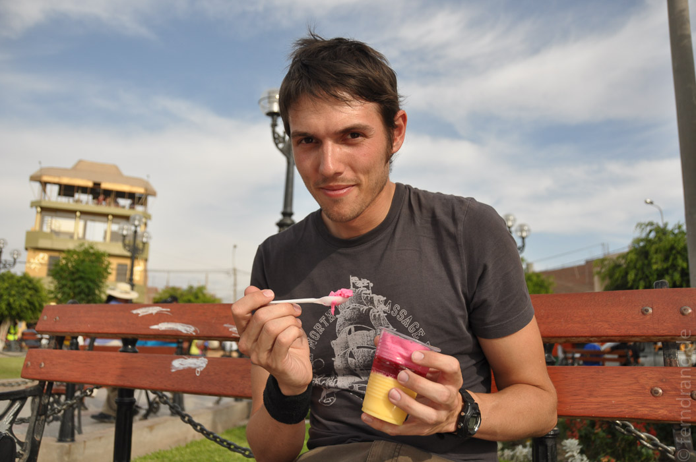

Die Nacht hat mal wieder viel zu früh aufgehört, weil wir um halb fünf zum Busbahnhof mussten, um von Arequipa nach Nazca zu kommen. Wir hatten die besten Plätze in einem Panoramabus, so dass wir die Fahrt richtig genießen konnten.
Zuerst ging die Fahrt in Richtung Pazifik, wobei sich die dürre Vegetation erstaunlicherweise noch immer weiter zurückgezogen hat. Als es dann schon richtig heiß und trocken war, ist dem Bus ein Reifen geplatzt. Zwischen leblosen, sandigen Bergen mussten wir einen unfreiwilligen Halt einlegen. Praktischerweise hatten wir ein Ersatzrad an Bord, so dass es recht schnell weiterging.
Kurz darauf kam endlich das Meer in Sicht. Wo der endlose Pazifik an Perus Küstenwüste stoßen will, trennt sie nur noch die Panamericana, die wir im Folgenden ein paar Stunden entlanggefahren sind. Ab und zu rauschten kleine Fischerdörfer an uns vorbei, im Großen und Ganzen ist die Gegend aber ziemlich leer.
Nazca selbst ist ein extrem reizloses Städtchen. Sogar die Plaza de Armas, mit der sonst noch versucht wird, Flair herzustellen, ist extrem trostlos. Wenn die Kirchen nicht schon von den Spaniern gebaut wurden, gilt es einfach nicht. Dafür scheint der Ort aber von der Hitze angenehm gelähmt zu sein. In unserem Hotel Camiluz haben wir eine tolle, super saubere Unterkunft mit Ankleidezimmer und väterlicher Fürsorge vom Chef.
